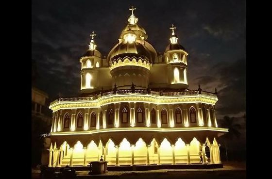
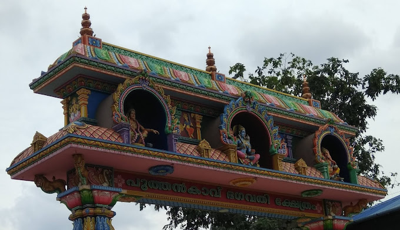
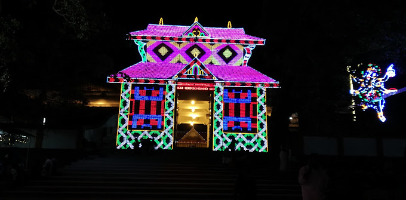
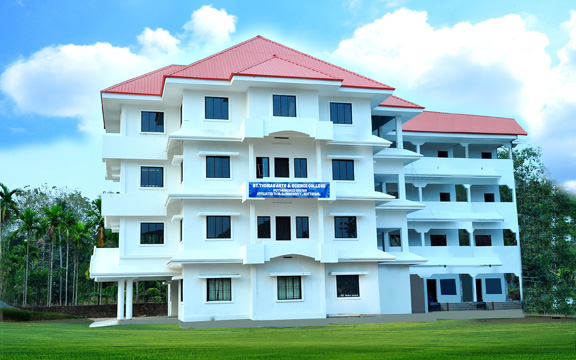

WELCOME TO MY HOMEPAGE
Tourist Attraction places
ST.GEORGE CHRUCH
St. George's Monastery is a Jacobite Syrian Christian Church situated at a hilltop near Puthencruz, Ernakulam District, Kerala. The monastery was established by Mor Yulius Elias Qoro (Patriarchal delegate to Malankara). The Malankara Syrian Orthodox Seminary began functioning in this monastery and later moved to Udayagiri. The monastery is the final resting place of Catholicos Baselios Paulose II.[1][2] In 2019, a retreat house named Khanema Hanna Home was consecrated by Ignatius Aphrem II Patriarch near to the Monastery.[3]

PUTHENCAVU TEMPLE
Puthenkavu Bhagavathy Temple Puthencruz. 3535 likes. Puthenkavu Bhagavathy Temple is situated in a small Village named Puthencruz on Kochi-Dhanushkodi Nat.

<

ST.THOMAS ARTS AND SCIENCE COLLEGE
St. Thomas Arts & Science College, Puthencruz, is the fifth educational institution owned and managed by Malankara Jacobite Syrian Christian Education Trust, Malecruz. The college is affiliated to Mahatma Gandhi University, Kottayam, and started functioning in June 2006. This institution has been established with the main objective of imparting good quality education to students aspiring to achieve academic excellence in a truly congenial and disciplined atmosphere. The college upholds the ideal that education should be for the all-round development of the personality of a student, and hence provides sufficient opportunities and facilities for necessary co-curricular and extra-curricular activities
